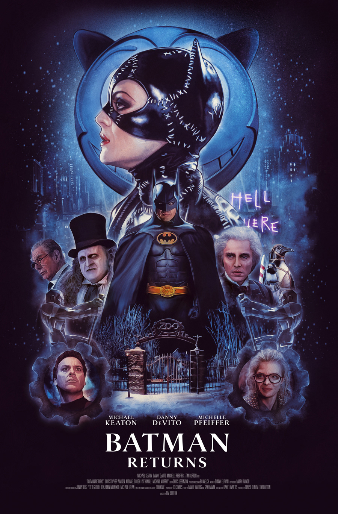
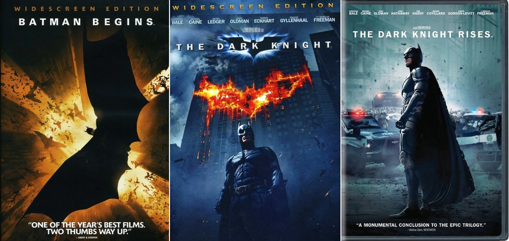
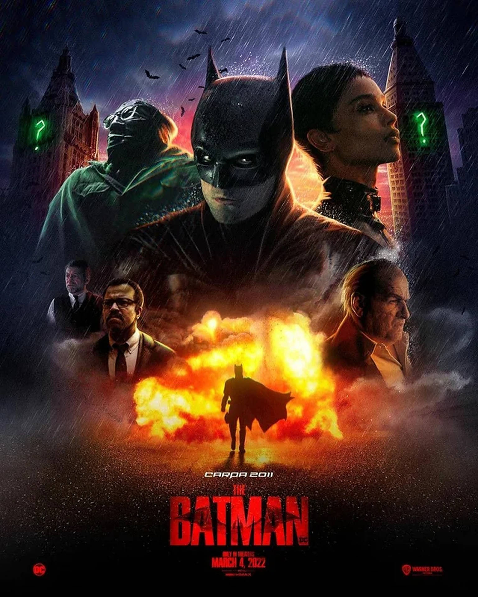

Batman Movie Adaptations
Batman has been a staple of the big screen for decades, evolving through various adaptations with unique styles and storytelling approaches.
Batman in Movies
Batman Returns (1992)
Tim Burton's sequel featured Michael Keaton reprising his role as Batman, facing off against Danny DeVito's Penguin and Michelle Pfeiffer's Catwoman.
The Dark Knight Trilogy (2005-2012)
Directed by Christopher Nolan, this trilogy redefined Batman on screen, emphasizing realism and deep character development. Christian Bale starred as Batman, with Heath Ledger's Joker in "The Dark Knight" being one of the most acclaimed performances in cinema history.
The Batman (2022)
Directed by Matt Reeves, this film presents a younger, more detective-focused Batman, played by Robert Pattinson. The film emphasizes Gotham’s gritty underworld and features Paul Dano as the Riddler.
